Attacks Attributed to al-Qaeda
Attacks Attributed to al-Qaeda
Updated: 2/9/25
Table of Contents
Notable Attacks Involving al-Qaeda in the West Notable Attacks Involving the al-Nusra Front During the Syrian Civil War Notable Attacks Involving al-Qaeda in South Asia (Including Central Command) Notable Attacks Involving al-Qaeda in the Horn of Africa (including al-Shabaab) Notable Attacks Involving al-Qaeda groups in Iraq Notable Battles Involving al-Shabaab Notable Attacks Involving al-Qaeda in the Islamic Maghreb (AQIM) Notable Attacks Involving Jamaat Nasr al-Islam wal-Muslimeen (JNIM), Mourabitoun, and other al-Qaeda in the Sahel Other Notable al-Qaeda Attacks
Notable Attacks Involving al-Qaeda in the West
• February 27, 1993 : Salafi jihadists launched their first attack on American al-Qaeda USSR's 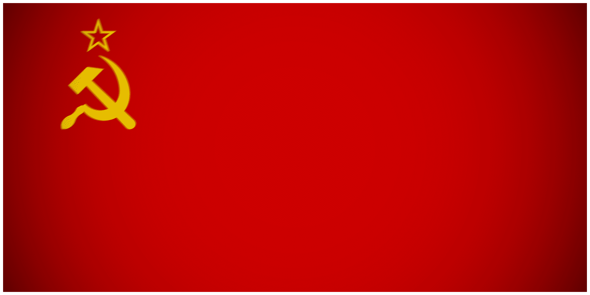
war in Afghanistan and had familial ties to al-Qaeda American
• September 11, 2001 : In an attack colloquially known as 9/11, al-Qaeda American al-Qaeda Afghanistan 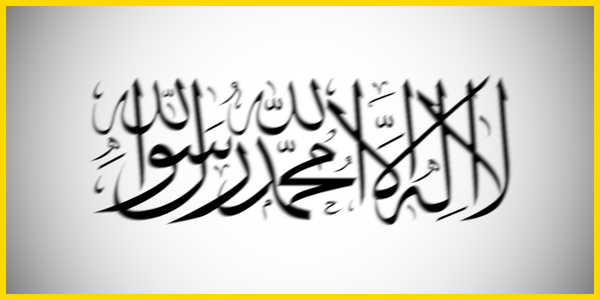
and had direct sponsorship from Osama Bin Laden to carry out the attacks. Bin Laden had been issuing fatwas on attacking American civilians on their territory until their total withdrawal from the Middle East and the revocation of relations with the state of Israel the United States NATO 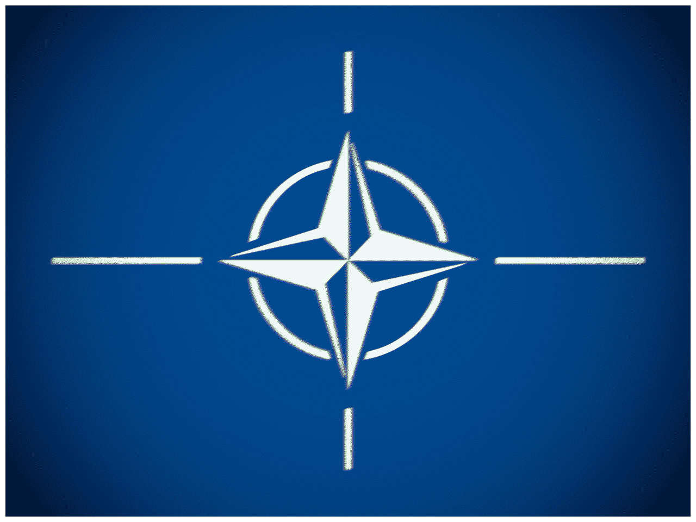
, leading to an invasion of Taliban controlled Afghanistan , who had just refused the extradition of Osama Bin Laden and al-Qaeda the United States Afghanistan Iraq
• January 14, 2015 : Islamist militants shouting "we have avenged the prophet Muhammad" and the Takbir attacked the office of the Charlie Hebdo, a French satirical cartoon magazine, killing 12 and injuring 11, most were cartoonists and journalists, but some others were police officers, including one French-Muslim officer who died in the line of duty. The attack had occurred after the magazine had issued multiple racist and offensive cartoons depicting the Prophet Muhammad, angering many Muslims around the world, including extremists from al-Qaeda in the Arab Peninsula (AQAP)
• December 6, 2019 : An Islamist extremist opened fire on American Saudi 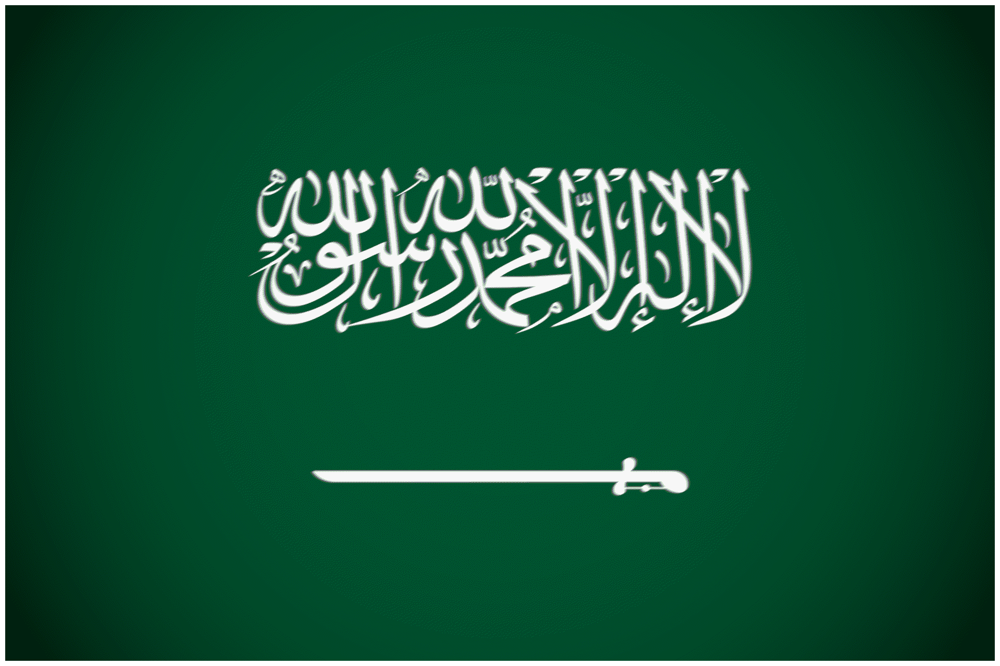
task force that had been sent to Florida to participate in a training mission but attacked the Americans AQAP
• March 11, 2004 and July 7, 2005 : Two terrorist attacks occurred on 2004 in Spain and 2005 in the UK
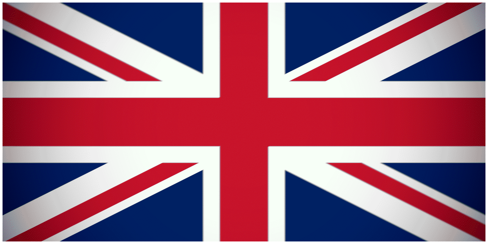
, killing 193 and 52 respectively. While these attacks were carried out by salafi jihadists with ties to al-Qaeda al-Qaeda Notable Attacks Involving the al-Nusra Front During the Syrian Civil War
• January 6, 2012 : Jabhat al-Nusra al-Qaeda Syria
• February 10, 2012 : Jabhat al-Nusra Syrian military Syrian opposition FSA denounced the attack, saying that it may have been an Assadist al-Nusra
• March 17, 2012 : Two al-Nusra Assad regime al-Nusra Front the regime the regime's siege had killed hundreds of civilians.
• February 21, 2013 : During the rebel offensive on Damascus, jihadist militants detonated themselves near Baath party Russian embassy in Syria al-Nusra
• July 22, 2013 : After rebel forces regime forces al-Nusra Front the Syrian government
• August 4, 2013 : al-Nusra al-Qaeda Islamic State of Iraq and the Levant rebel the Assad dynasty al-Qaeda the Regime the rebels
• December 12, 2013 : During a rebel offensive in Eastern Ghouta's Damascus suburbs, Jaysh al-Islam 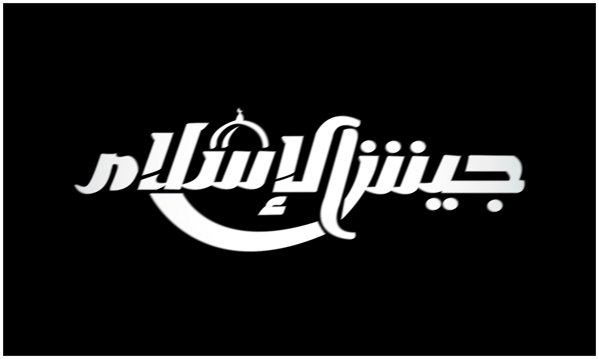
and al-Nusra fighters al-Nusra the regime
• June 10, 2015 : When local Druze in the town of Qalb Loze resisted their arrest warrant, al-Nusra front jihadists Syria al-Nusra Tunisian 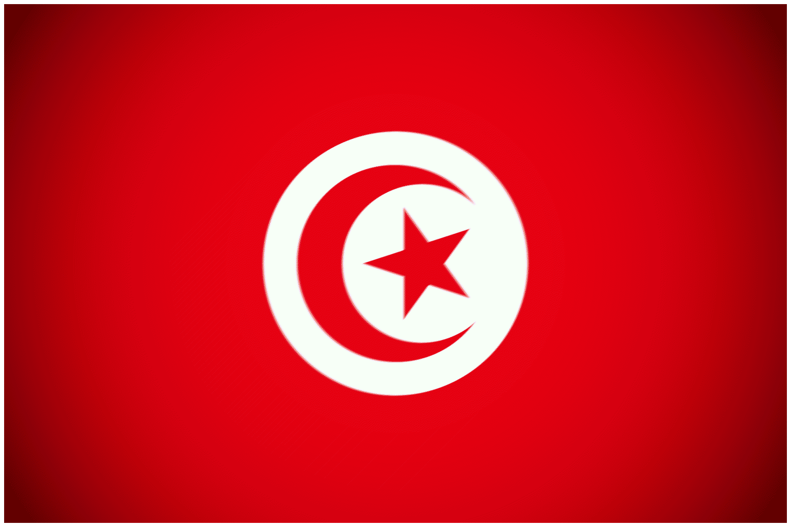
foreign fighter, get off easy.
• May 12, 2016 : From besieged positions near northern Homs and southern Hama governorate al-Nusra Ahrar al-Sham 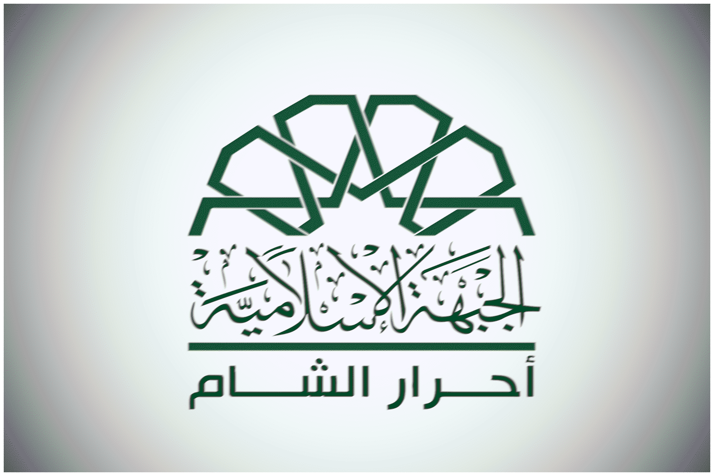
took the town of Zaraa in a suprise attack, killing up to 30 Assadist militiamen
Notable Attacks Involving al-Qaeda in South Asia (Including Central Command)
• September 9, 2001 : al-Qaeda Northern Alliance Taliban after they had entered Kabul during the mid 1990s. al-Qaeda Northern Alliance territory al-Qaeda
• June 2, 2008 : After an independent Danish 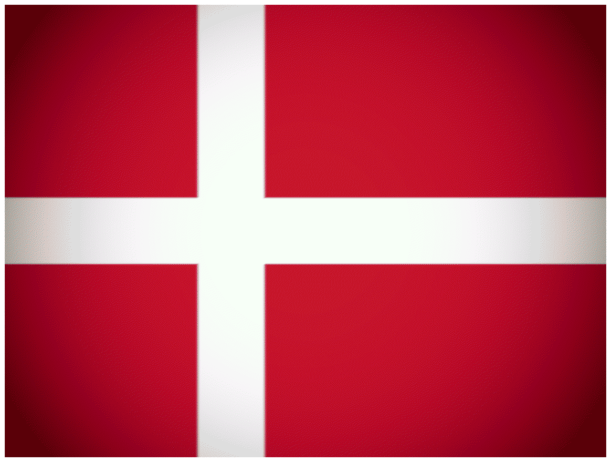
magazine had published scandalous images of the Prophet Muhammad, an al-Qaeda Danish embassy in Islamabad, Pakistan 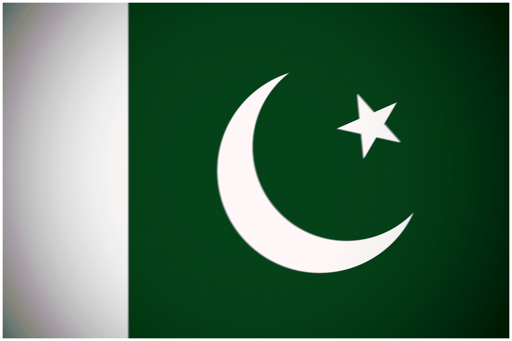
, killing six and injuring 24. al-Qaeda Denmark wherever they could. As with other attacks following a westerner insulting the Prophet, the jihadist organization may have wanted to garner support from the Muslims in general, who were furious at the Danish cartoon.
• December 30, 2009 : An al-Qaeda Afghan Pakistan , killing nine and injuring six, mostly CIA officers. The perpetrator, descendants of Palestinian 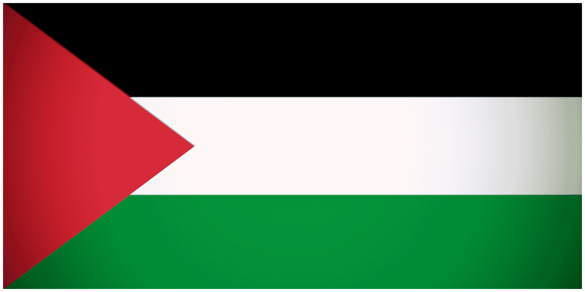
refugees who were kicked out by Kuwait 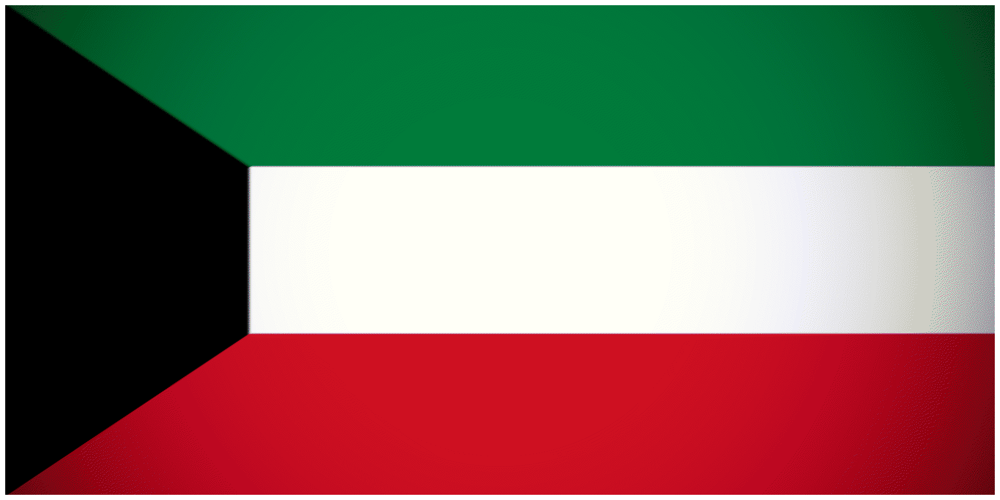
after the US
• February 13, 2010 : A bomb detonated in a German bakery near a Jewish center in Pune, central India Indian Mujahideen Lashkar-e-Taiba 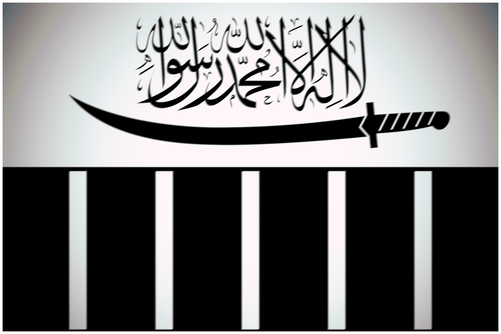
refrained from claiming responsibility, an Egyptian al-Qaeda
Notable Attacks Involving al-Qaeda in the Horn of Africa (including al-Shabaab)
• August 7, 1998 : In al-Qaeda's Kenya 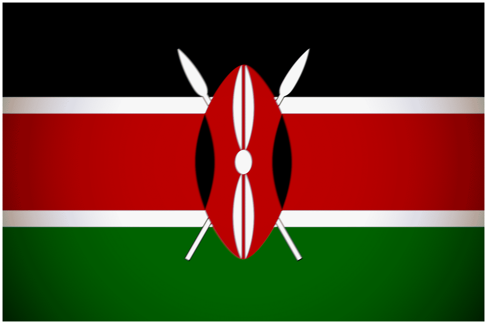
, and Dar es Salaam, Tanzania 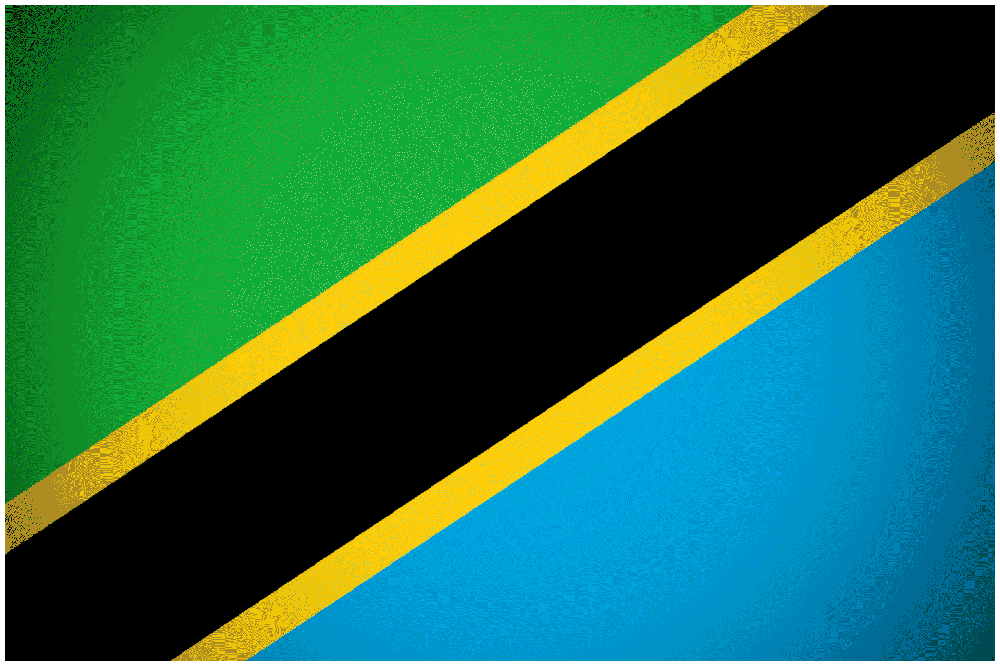
, killing 224, including 12 Americans al-Qaeda American Sudan 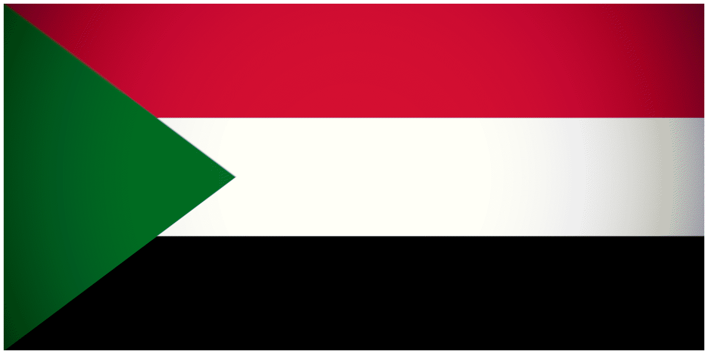
, who was accused of supporting or atleast failing to crack down on al-Qaeda al-Qaeda Afghanistan and Sudan . The campaign failed to materialize serious results and Osama Bin Laden would go back to planning.
• September 21, 2013 : In retaliation for Kenya's intervention against the jihadist group in southern Somalia al-Shabaab Kenya , killing 62 civilians, injuring 160, and destroying the mall itself. They "vetted" the muslims from the non muslims by forcing everyone to say the Shahada. If you fail, you die. After the incident was resolved after days of clashes, a number of people heavily criticized the government's response, reportedly failing to stop it in time, despite getting a heads up, and failing to catch the militants. It was al-Shabaab's
• June 15, 2014 : Two successive attacks targeting the Christian town of Mpeketoni, Kenya and its satellite villages, killing around 70 people. Both attacks involved jihadists going door to door forcefully asking if people were Muslim, killing them if they said no. Despite al-Shabaab
• April 2, 2015 : Four al-Shabaab Kenya , killing 148 and injuring 79. The militants held hundreds hostage, identifying and selectively executing Christians. Eventually, Kenyan commandos came in and killed all four gunmen, who wore suicide vests. Al-Shabaab Kenya's involvement with the African Union mission in Somalia Kenya during the 21st century. It was later revealed that multiple people tried to warn Kenyan authorities of an impending disaster at the university, but were left on deaf ears.
• October 14, 2017 : An SVBIED detonated itself in a busy location near a major hotel and the Qatari embassy 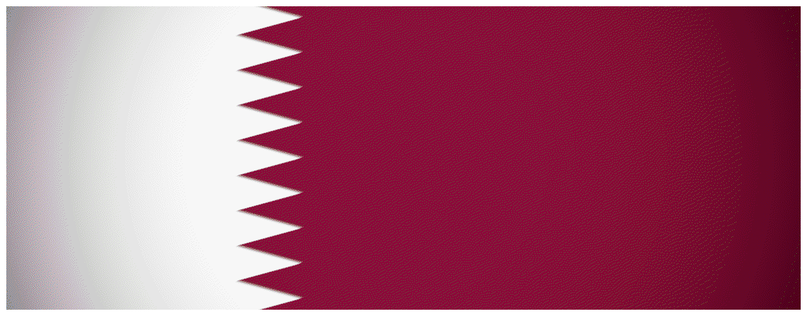
in Somalia SNA al-Shabaab
• January 15, 2019 : Four al-Shabaab Kenya's capital city in Nairobi hosting numerous international companies, killing 22 civilians and wounding 27. Kenyan forces, commanded by a British officer in the country for training, cleared the building after nearly a day of clashes. The attack was soon claimed by al-Shabaab America's Israel
• December 28, 2019 : An SVBIED was detonated in a police checkpoint in Somalia's Al-Shabaab Turkish involvement 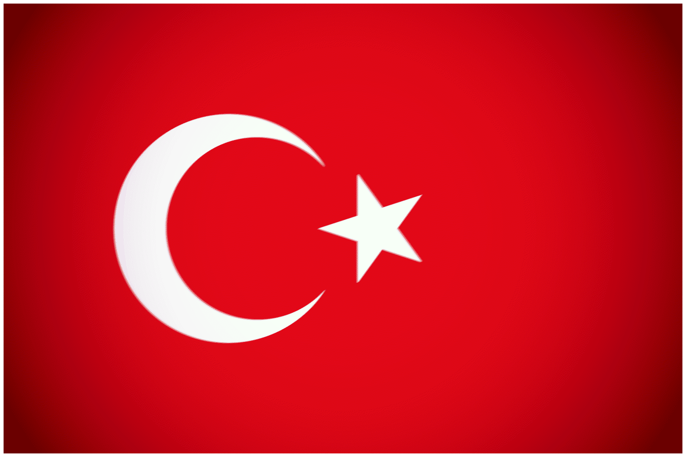
in the country's
• October 29, 2022 : Weeks after the Somalia's military al-Shabaab SNA
• August 2, 2024 : Multiple al-Shabaab Somalia Somalia al-Shabaab
Notable Attacks Involving al-Qaeda groups in Iraq
• February 1, 2004 : In the opening phase of the insurgency against the US occupation Iraq's Kurdish autonomous region 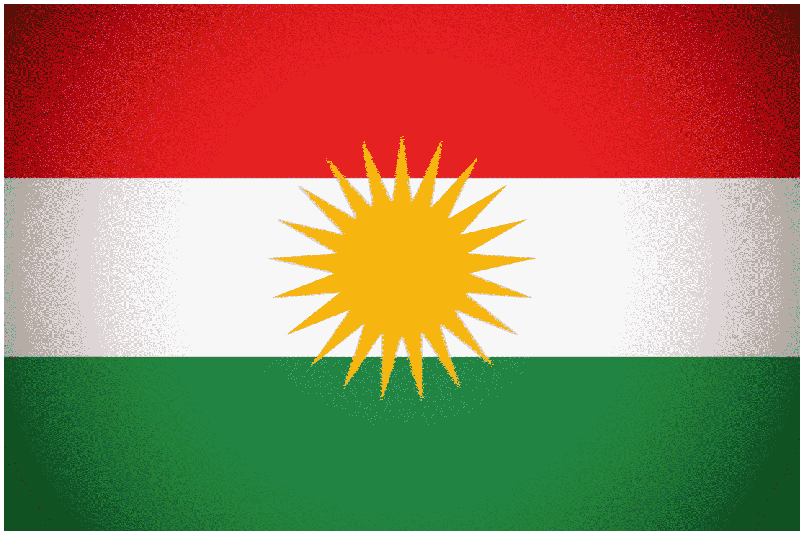
near Kurdish political party offices during Eid al-Adha festivites, killing 117 and injuring over 130, including local officials. The attack may have been retaliation for the Kurdish region's support for the US invasion the US . While no group claimed responsibility, al-Qaeda al-Qaeda Iraq
• February 28, 2005 : A Jordanian al-Qaeda Iraq Iraq the United States Jordan 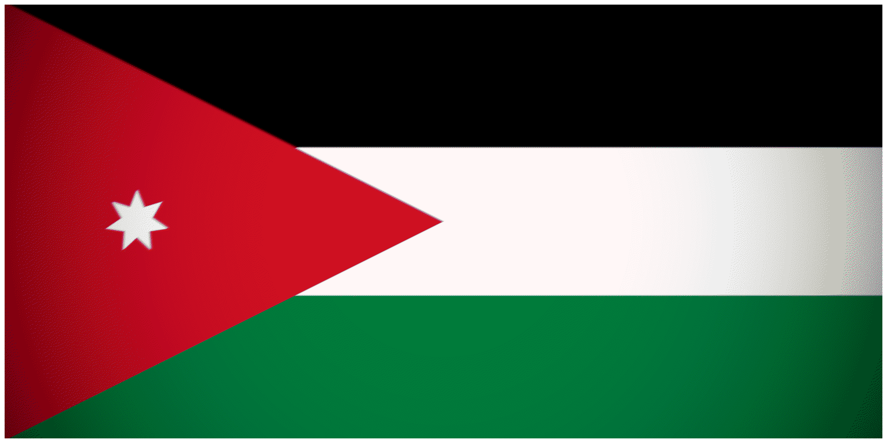
.
• April 12, 2007 : For the first time since the invasion, Islamic State of Iraq al-Qaeda in Iraq Iraq's
• August 14, 2007 : During the escalating and brutal sectarian civil war in Iraq Iraq Islamic State in Iraq ISIS
• August 19, 2009 : Three suicide bombers detonated themselves in multiple Iraqi Islamic State in Iraq
• October 25, 2009 : Two Islamic State in Iraq the US withdrawal Iraq
• December 8, 2009 : In the trailing end of the US Iraq ISI Iraqi
Notable Attacks Involving al-Qaeda in the Islamic Maghreb (AQIM)
• April 11, 2002 : A jihadist SVBIED detonated at the historic Ghriba synagogue in Tunisia , killing 19 and injuring over 30. Of the 19, the vast majority were tourists from Germany , with some Tunisians and Frenchmen . al-Qaeda the Palestinians by the Israelis
• May 16, 2003 : Twelve Jihadist suicide bombers detonated themselves next to several Jewish sites in Casablanca, Morocco 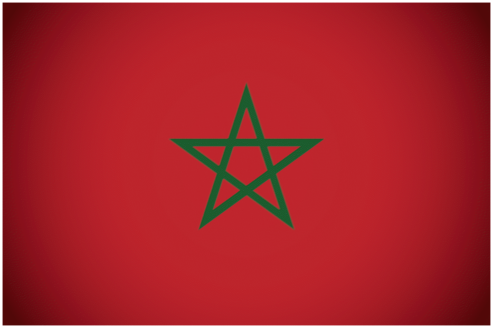
, killing 33, including some nationals from western Europe, and injuring a hundred. The jihadists, who had planned the attack for months, with some even fighting in Afghanistan al-Qaeda the Moroccan state tightened restrictions and laws surrounding Islamism.
• April 11, 2007 : Two SVBIEDs detonated in Algiers, the capital of Algeria 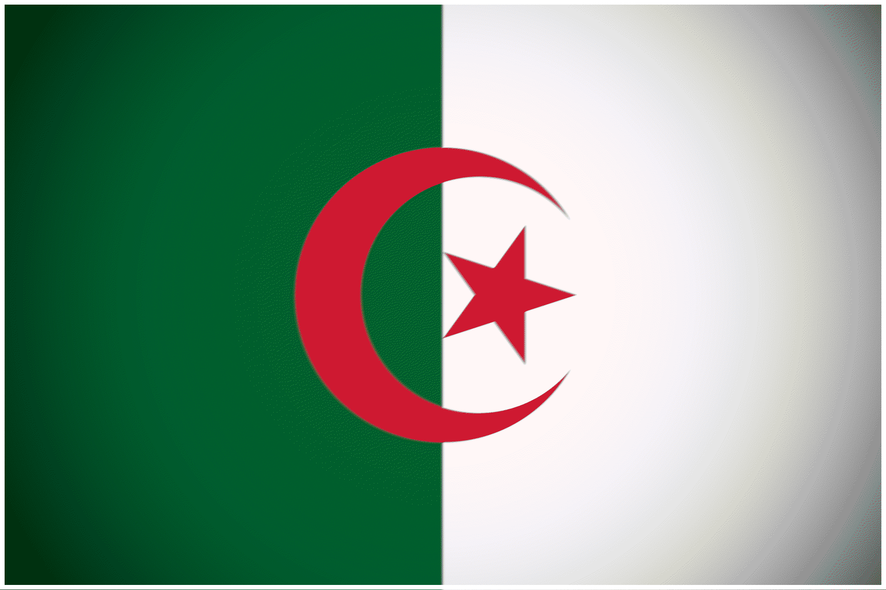
, targeting the office of the Algerian PM and a police station, killing 33 and injuring over 150. al-Qaeda in the Islamic Maghreb Algeria's "World Trade Center", an obvious allusion to the towers in New York that were taken down on 9/11.
• December 11, 2007 : Two SVBIEDs detonated outside of UNHCR offices and the supreme constitutional court of Algeria , killing 41, including 17 UN employees, and injuring 170. The bombing created extensive damage to the UN building. The attack was claimed by al-Qaeda
• April 19, 2008 : An SVBIED detonated next to paramilitary recruits waiting to take entry exams in Issers, northern Algeria , killing 43 and injuring 38. Algeria officials considered it the deadliest terrorist attack in years.
• January 16, 2013 : 29 Jihadists violently stormed a natural gas plant in In Amenas, southeastern Algeria , taking 800 hostage, including 132 foreign nationals. The militants demanded the end of French intervention against them in northern Mali Algeria special forces launched a major rescue operation, freeing the 800 and killing all of the militants. In the end, 39 foreign workers and one security guard was killed. The attack was carried out by al-Mourabitoun, an arm of al-Qaeda in the Islamic Maghreb
Notable Attacks Involving Jamaat Nasr al-Islam wal-Muslimeen (JNIM), Mourabitoun, and other al-Qaeda in the Sahel
• January 15, 2016 : Half a dozen militants stormed a restaurant and hotel in the Burkinabe capital, taking more than a 170 hostages. Eventually, Burkinabe 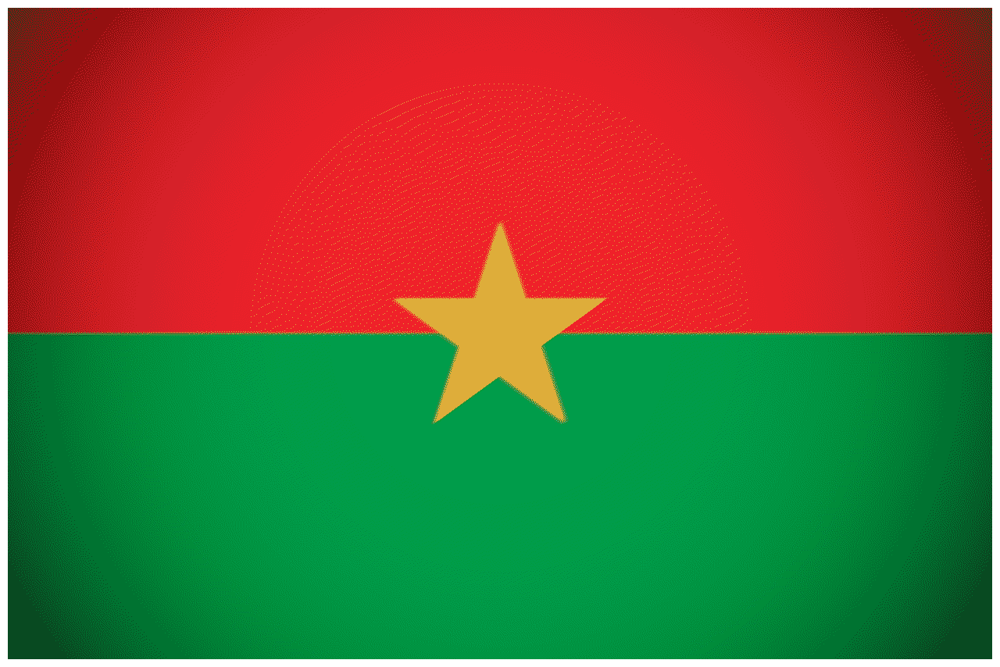
commandos came by the next time, clashing with the militants violently before killing them and freeing the hostages. In total, 30 people were killed, with a majority from Europe or North America, and 56 were wounded. Some survivors saw the attackers specifically targeting "white" people. It was the deadliest attack committed by al-Qaeda
• September 3, 2019 : A mine planted by JNIM Mali al-Qaeda
• June 4, 2021 : Jihadists targeted the town of Solhan in northeast Burkina Faso , attacking its military base and going door to door and executing civilians, killing around 160 people. This attack marked the deadliest in Burkinabe history up to that point. JNIM the Islamic State Burkinabe government also came to during their own investigations. The government also claimed that the attack was done for looting and financing the group's activities, while others claimed revenge or pressure. The province is majority Fulani, which matches with most of JNIM
• May 25, 2022 : Refugees running from the siege of Madjoari were intercepted and executed by JNIM Burkina Faso's southeast, resulting in atleast 50 deaths and a similar amount were missing. All of the dead, according to the governor of the region, were military aged men, who were singled out from the women and the children. The attack was done in revenge for a failed JNIM
• September 7, 2023 : Jihadists attacked the Tomboctou, a civilian boat controlled by a Moroccan company going from Mopti to Gao along the Niger river in Mali al-Qaeda JNIM JNIM
• August 24, 2024 : JNIM Burkina Faso , killing atleast 200 civilians, who were only guarded by a dozen Burkinabe soldiers as they were forced to build a circle of trenches around the town for the military. JNIM JNIM al-Qaeda
Other Notable al-Qaeda Attacks
• December 29, 1992 : Two Afghan war Yemeni US Somalia Yemen Yemen US
• October 12, 2000 : The USS Cole, docked in the Yemeni al-Qaeda Americans
• October 12, 2002 : Two suicide bombers detonated themselves in two different night clubs in the hotspot of Bali, Indonesia , a city known for hosting Australian 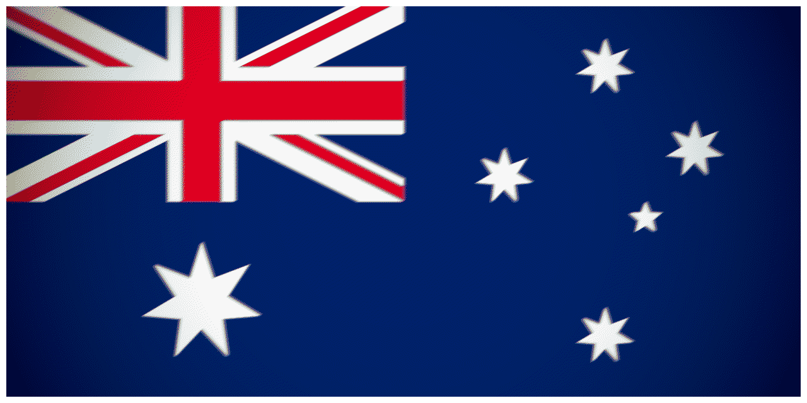
tourists, during busy season. The attack was a "double tap", since the second bomber detonated itself after party-goers had left the first nightclub aftert that detonation. In the end, 202 people had died, 88 Australian nationals, and 209 were wounded. Jemeaah Islamiyah al-Qaeda al-Qaeda's Australia's involvement in Afghanistan Indonesia . It was later revealed in an investigationt that al-Qaeda al-Qaeda Indonesia and the deadliest against Australians .
• May 12, 2003 : A group of jihadist militants unloaded themselves next to hotels in Riyadh, Saudi Arabia , that were frequented by foreigners, including Americans al-Qaeda Afghanistan Iranians 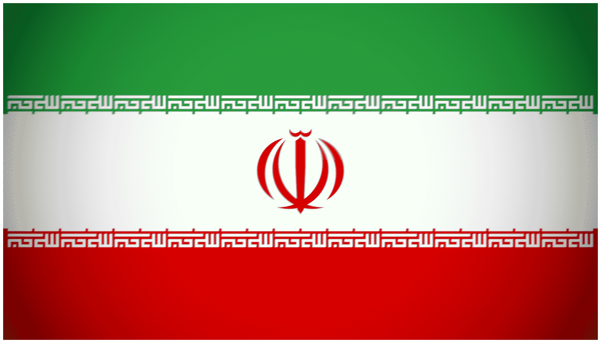
had "ordered the attack", as the planner, Sayf al-Adel, is believed to be in Iran .
• November 15, 2003 : Four jihadist suicide bombers detonated themselves in four locations in Istanbul, the largest city in Turkey , including two synagogues, and a few days later, a British consulate, and a bank, killing 55 and injuring 750. While a militant Turkish nationalist group had initially claimed responsibility, Turkish investigators eventually claimed that the attack was carried out and planned by al-Qaeda Turkish soil and inspired new government counterterror operations against Islamists in that country.
• November 9, 2005 : In response to Jordan's support for the United States Israel Jordan , killing 57, including numerous foreign citizens, and wounding 115. The attack was claimed by al-Qaeda's Americans Iraq Jordan had taken in hundreds of thousands of Palestinian refugees .